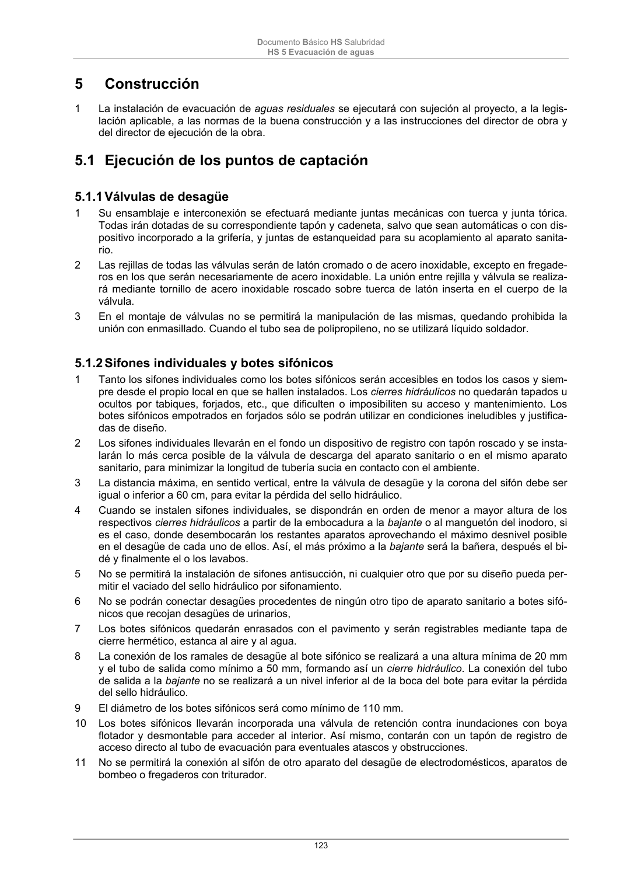

DB-HS Salubridad · edición 2022-06-14 · capa oficial
Documento DB-HS-oficial · SHA-256 del PDF 68df3caacc95f71aee2ec1ba7b2c65ae66155c21e3a8785521b8fdd4fd640d3b
Copia fiel del PDF fuente · Fuente oficial
Ficha de la disposición en la fuente oficial
Formatos: JSON del segmento · Markdown
5.1 Ejecución de los puntos de captación 5.1.1 Válvulas de desagüe 5.1.1 Válvulas de desagüe 1 Su ensamblaje e interconexión se efectuará mediante juntas mecánicas con tuerca y junta tórica. Todas irán dotadas de su correspondiente tapón y cadeneta, salvo que sean automáticas o con dis- positivo incorporado a la grifería, y juntas de estanqueidad para su acoplamiento al aparato sanita- rio. 2 Las rejillas de todas las válvulas serán de latón cromado o de acero inoxidable, excepto en fregade- ros en los que serán necesariamente de acero inoxidable. La unión entre rejilla y válvula se realiza- rá mediante tornillo de acero inoxidable roscado sobre tuerca de latón inserta en el cuerpo de la válvula. 3 En el montaje de válvulas no se permitirá la manipulación de las mismas, quedando prohibida la unión con enmasillado. Cuando el tubo sea de polipropileno, no se utilizará líquido soldador.
